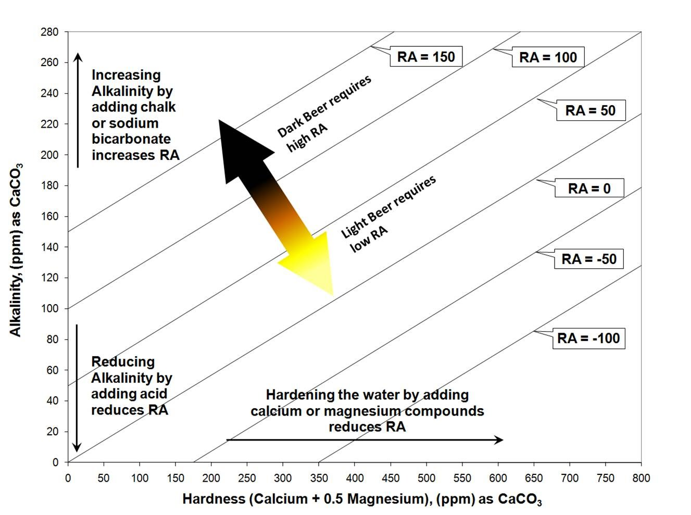

Sources :
Interaction des composants présents dans l'eau
L’eau joue un rôle très important dans la bière par les réactions chimiques tout au long du procédé de fabrication qui sont régies par les minéraux dissouts. En effet, les ions présents contrôlent le pH, la dureté, l’alcalinité, l’alcalinité résiduelle et la teneur en minéraux. Lorsqu’un ajustement est effectué sur un de ses facteurs, il est possible que d’autres en soient également altérés. On suggère de ne pas essayer de reproduire une eau spécifique, mais plutôt de l’utiliser comme ligne directrice. L’idée générale est de réussir à équilibrer les grains, l'alcalinité et la dureté de l'eau.
Bien que la qualité de l’eau potable demeure relativement constante toute l’année, les minéraux qui la composent ne le sont pas. En effet, la qualité de l’eau brute que les usines de traitement doivent transformer subit plusieurs variations en fonction des saisons. C’est pourquoi il est recommandé d’effectuer des tests d’eau régulièrement. Afin d’obtenir les informations essentielles sur le profil de l’eau de brassage, il est possible de se procurer l’ensemble BrewLab® Basic (7189-01) de Lamotte à la Fabrique du Vin, ou d’envoyer un échantillon à Ward Lab pour le test « W-5A Brewer’s test » .
La dureté est principalement due aux ions calcium et magnésium. Une dureté de modérée à dure peut-être désirable pour le brassage de certains types de bière, en particulier les bières noires. Au contraire, une eau douce est plus intéressante pour les bières de type Pilsner. Il est possible d’utiliser un mélange d’eau déminéralisée et d’eau du robinet pour réduire la dureté de l’eau. Il est à noter que les adoucisseurs d’eau à base de sel remplacent les ions pour du Na2+ et n’est pas recommandé pour le brassage. Pour augmenter la dureté, l‘ajout de Gypse « Gypsum » (CaSO4) ou de la craie « Chalk » (carbonate de calcium) (CaCO 3) est recommandé.
Dureté temporaire : calcium et magnésium liés aux carbonate et bicarbonate. Il est possible de la réduire par ébullition et par l’ajout d’hydroxyde de calcium.
Dureté permanente : calcium et magnésium liés aux anions chlorure ou sulfate.
Dureté totale : la somme des duretés temporaires et permanentes.
L’alcalinité a un impact significatif sur les saveurs retrouvées dans la bière. Elle est essentiellement constituée de CO32 HCO3 et OH- et représente la capacité tampon, c’est-à-dire sa capacité à résister aux changements de pH et à neutraliser les acides. Il est recommandé d'avoir une alcalinité inférieure à 50 ppm de CaCO3 équivalent. Pour une eau avec une grande capacité tampon, il est possible de la faire bouillir avant l’empâtage, permettant ainsi d’enlever le CO2 et de forcer le calcium à réagir pour créer de la craie (carbonate de calcium CaCO3) qui va précipiter et faire diminuer l’alcalinité de l’eau. Un excès d’alcalinité peut faire augmenter le pH, créant ainsi des saveurs et amertumes désagréables, ainsi qu’une bière plus foncée. Une alcalinité trop basse peut, quant à elle, faire diminuer le pH.
L’alcalinité résiduelle (AR) est très utile au domaine brassicole, car elle permet d’évaluer les changements de pH potentiels, et de comprendre ses variations lors de l’empâtage. L’alcalinité résiduelle est fonction de la dureté de l’eau et de l’alcalinité. Le calcium et le magnésium dans l’eau de brassage réagissent avec les composés phosphate dans le malt et produisent des acides qui neutralisent l’alcalinité de l’eau. Le graphique suivant montre que l’ajustement de l’alcalinité résiduelle peut être fait en modifiant la dureté ou l’alcalinité.
Il est a noté que les réactions lors d’ajouts de la craie se produisent très lentement. Voici quelques un des principaux ajustements.
Les bières pâles sont avantagées avec une AR plus basse, tandis que les bières foncées le sont avec une AR plus élevée. En effet, le succès pour brasser des bières pâles en Pilsen est dû à la douceur de l’eau, sa basse alcalinité et l’AR près de 0 ppm. Pour les bières pâles de Burton-On-Trent, le succès est dû à une très haute dureté et une haute alcalinité résultant également en une AR très basse. Pour brasser des bières plus claires avec une eau avec une AR élevé, il est suggéré d’ajouter de l’acide. Les bières foncées brassées avec une eau avec une AR basse risquent de se retrouver avec un pH trop bas. Causant ainsi une diminution de l’efficacité des enzymes pendant l’empâtage et possiblement une bière acide, mal balancée ou acidulé. Le succès des bières foncées avec une AR de plus de 50 ppm va amoindrir cette diminution de pH causé par les grains et produira une bière plus crémeuse.
| Profils | Ca2+ | Mg2+ | Na+ | Cl- | SO42- | HCO3- |
|---|---|---|---|---|---|---|
| Balanced Profile | 80 | 5 | 25 | 75 | 80 | 100 |
| Balanced Profile II | 150 | 10 | 80 | 150 | 160 | 220 |
| Light colored and malty | 60 | 5 | 10 | 95 | 55 | 0 |
| Light colored and hoppy | 75 | 5 | 10 | 50 | 150 | 0 |
| Burton on Trent (historic) | 270 | 41 | 113 | 85 | 720 | 270 |
| Dortmund (historic) | 250 | 20 | 10 | 100 | 300 | 340 |
| Dublin (Dry Stout) | 110 | 4 | 12 | 19 | 53 | 280 |
| Edinburgh (Scottish Ale, Malty Ale) | 100 | 18 | 20 | 45 | 105 | 235 |
| London (Porter, dark ales) | 100 | 5 | 35 | 60 | 50 | 265 |
| Munich (Dark Lager) | 82 | 20 | 4 | 2 | 16 | 320 |
| Pilsen (Light Lager) | 7 | 3 | 2 | 5 | 5 | 25 |
| Düsseldorf (Altbier) | 90 | 12 | 45 | 82 | 65 | 223 |
| Vienna | 75 | 15 | 10 | 15 | 60 | 225 |
Le calcium contribue à la dureté de l’eau et est essentiel pour la santé des levures. Les enzymes présentes lors de l’empâtage bénéficient également de sa présence. En général, un mout fait à partir d’orge et/ou de blé contient suffisamment de calcium pour la santé des levures. Lors de l’empâtage, le calcium réagit avec le phosphate du malt et fait diminuer le pH en le faisant précipiter en phosphate de calcium et en libérant des protons H+. Le calcium augmente la floculation de matières en suspensions et limite l’extraction des tanins de l’écaille des grains. Il permet également de réduire le voile dans la bière, de diminuer la viscosité lors de l’empâtage et d’améliorer les saveurs du houblon. De par ses propriétés, si une levure a tendance à floculer trop rapidement, réduire le calcium pourrait contrebalancer cette tendance. Par exemple, les levures anglaise ont besoin de plus de calcium, tandis que les Czech moins.
Ajouter du calcium dans l’eau d’empâtage est une bonne idée pour réduire le pH. Par contre, ajouter du calcium dans l’eau de rinçage n’a aucun effet, parce qu’il ne peut pas se lier aux phosphates contenus dans le malt. Il faut alors utiliser un acide pour réduire l’eau de rinçage.
Le magnésium (Mg2+) contribue légèrement à la dureté de l’eau. Il accentue les saveurs avec une amertume franche lorsqu’il est présent en faible concentration, mais devient astringent à forte concentration. Le magnésium (Mg2+) est un nutriment à levure et un cofacteur important pour les enzymes. Il est à noter que cet ion réduit légèrement le pH lorsqu’il est en contact avec du malt, mais ne devrait pas être employé dans ce but.
Le sodium (Na2+) a des saveurs acidulées et salées qui accentuent le gout de la bière lorsqu’il est présent à faible concentration. Lorsqu’il est balancé avec du chlorure (Cl-), il confère une rondeur à l'arôme de la bière. Par contre, il est dangereux pour les levures et à un gout désagréable à haute concentration. Les concentrations proposées par la littérature sont comprises entre 0 et 150 ppm, mais doivent être limitées si l’eau contient également beaucoup de sulfates (SO2-4). Selon plusieurs sources, une concentration de sodium (Na2+) inférieur à 60 ppm est généralement utilisée. Toutefois, certains styles de bière, telles les Gose, contiennent plus de 250 ppm de sodium (Na2+).
Le chlorure (Cl-) accentue la plénitude et la douceur, tout en améliorant la stabilité et la clarté de la bière. La limite supérieure est fonction de la concentration de sulfate (SO42-). En effet, si cette dernière est de 100 ppm, le chlorure (Cl-) devrait être limité à 50 ppm. Dans le cas de l’eau de Dortmund, la concentration en chlorure (Cl-) est de 130 ppm pour une concentration de plus 300 ppm de sulfate (SO42‑). Il est important de distinguer l’ion chlorure « chloride » en anglais, avec de désinfectant chlorine.
Le sulfate (SO42-) confère aux bières un gout plus sec et accentue leur caractère houblonné. Idéalement, sa concentration doit se situer entre 0 et 150 ppm, mais peut-être augmentée jusqu’à 350 ppm pour une bière très houblonnée. Au-dessus de cette concentration, il est possible de percevoir des traces de sulfure.
Le bicarbonate (HCO3-) est un tampon alcalin puissant qui est responsable de l’alcalinité dans la plupart des eaux potables. L’acidité produite par les grains pendant l’empâtage permet d’en neutraliser une partie et ainsi faire descendre le pH dans la zone optimale. S’il y a trop de bicarbonate pour la quantité d’acide contenu dans les grains, l’action des enzymes sera réduite et la perception du houblon sera désagréable. En général, le bicarbonate n’est pas désirable pour le brassage et doit être inférieur à 50 ppm. Il est toutefois possible de le balancer avec du Calcium afin de neutraliser l’alcalinité résiduelle.
Potassium (moins de 10 ppm)
Le potassium est un constituant du malt et il ajoute un gout salé lorsqu’il est à haute concentration. En haut de 10 ppm, il est reconnu pour être inhibiteur de certaines enzymes. Il n’est généralement pas nécessaire d’en ajouter, puisque le malt en contient suffisamment.
Zinc (moins de 0,5 ppm)
Le zinc est un nutriment à levure lorsqu’il est présent à moins de 0,1 ppm, mais il devient toxique à plus d’une ppm et ajoute des saveurs métalliques à la bière.
Afin d’éliminer le chlore, plusieurs solutions sont disponibles. En effet, il est possible de faire bouillir ou d’aérer l’eau, d’y ajouter du méta-bisulfite ou de l’acide ascorbique. Il est également possible d’utiliser un filtre au charbon activé. Celui-ci à une durée de vie d’environ six mois ou de 4000 litres. Le débit maximum est de quatre litres par minute et on suggère également de purger le système au moins cinq minutes avant l’utilisation s’il a été inactif pendant une longue période.
Les ajustements se font par des additions généralement de très petites et requièrent une mesure bien précise. Le calculateur inclus dans le logiciel Beersmith et celui disponible en ligne gratuitement de Brewer's friend sont d'excellents outils afin de calculer les ceux-ci.
Bicarbonate de sodium « Baking Soda » (NaHCO3 ): 1 g/L augmente le sodium de 274 ppm et le bicarbonate de 726 ppm.
Chlorure de calcium « Calcium Chloride » (CaCl) : 1 g/L augmente le calcium de 272 ppm et le chlorure de 483 ppm.
Sulfate de Magnésium « Epsom Salt » (MgSO4): 1g/L augmente le magnésium de 120 ppm et le chlorure de 349 ppm.
Carbonate de Calcium (Craie) « Chalk » (CaCO3): 1g/L augmente de 200 ppm le calcium et de 610 ppm le bicarbonate. Il est à noter que des conditions acides sont nécessaires afin qu’il se dissolve complètement.
Sulfate de Calcium (Gypse) « Gypsum » (CaSO4) : 1 g/L augmente de 232 ppm le calcium et 558 ppm le sulfate. Doit être ajouté à 40°C.
Chlorure de Sodium (Sel de Table) « Table Salt » (NaCl) : 1 g/L augmente le sodium de 393 ppm et le chlorure de 607 ppm.
Le ratio sulfate : chlorure permet de contrôler si une bière est amère versus houblonnée ou ronde versus maltée. La perception générale associée au ratio sulfate/chlorure est présenté au tableau suivant.
| Ratio sulfate : chlorure | Perceptions |
|---|---|
| 0.0 - 0.4 | Trop malté |
| 0.4 - 0.6 | Très malté |
| 0.6 - 0.8 | Malté |
| 0.8 - 1.5 | Balancée |
| 1.5 - 2.0 | Légèrement amère |
| 2.0 - 4.0 | Amère |
| 4.0 - 9.0 | Très amère |
L’ion sulfate (SO42-) accentue les saveurs du houblon et l’amertume, on parle d’amertume franche, ou en anglais « sharp », se traduisant par une bière plus sèche un fini plus propre, tandis que l’ion chlorure (Cl-) accentue la texture en bouche et la saveur du malt pour une bière plus ronde, adoucissant la sensation d’amertume. La concentration de chlorure maximale recommandé est de 100 ppm. Pour une IPA, ratio maximum 9 :1 sinon gout minéral. Pour une NEIPA, on souhaite avoir un ratio inférieur à un, c’est-à-dire moins de sulfate que de chlorure.